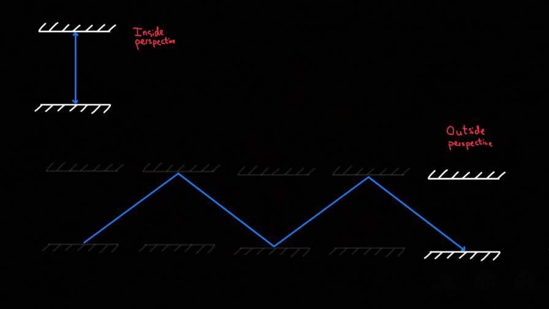
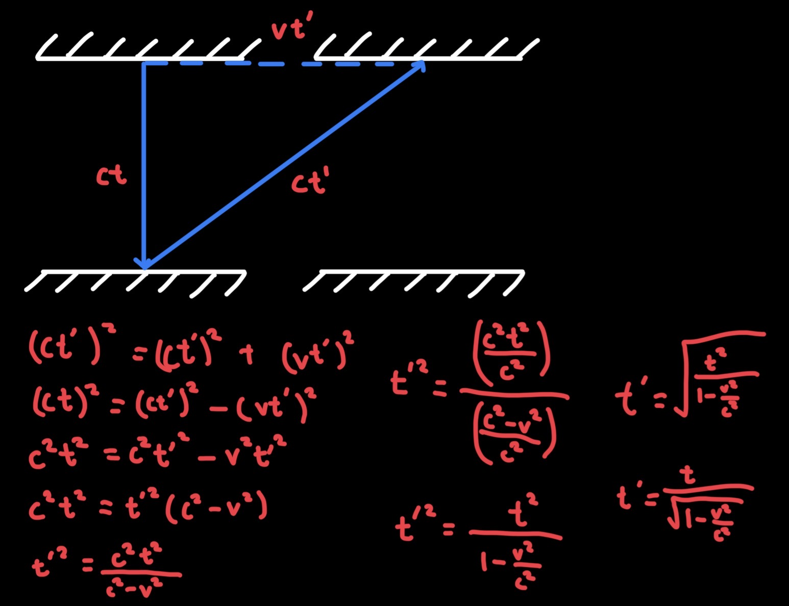

Physics • Relativity
Why can’t objects with mass travel at the speed of light?
In 1905, Albert Einstein published the paper ‘On the Electrodynamics of Moving Bodies’. This paper explained the key concepts of Special Relativity, a theory explaining the behaviour of objects moving very close to the speed of light. However, Einstein’s theory states that objects with mass will never be able to travel at the speed of light. To explain why that is, we will need to make use of the two postulates of special relativity.
A postulate is a statement true by definition, or one which does not require explanation. For example, all right angles are equal, and a straight line can be drawn through any two points. These facts are chosen as truths from which other facts can be derived. In special relativity, the two postulates are:
1. The laws of physics are constant in all inertial reference frames
2. The speed of light (in a vacuum), c, is constant for all observers, regardless of the motion of the observer
A reference frame refers to the perspective of an observer, such as inside a car, or on the surface of Earth, or anywhere else. An inertial reference frame refers to one in which there is no acceleration, meaning the velocity is constant (or zero if at rest). The first postulate states that in all cases with no acceleration, the same laws and equations apply. This can be intuitive with the example of an observer in a car travelling at a constant speed. They cannot tell if the car is moving forward, or if the surroundings are moving backward. This means that the rules of physics must be the same inside the car and outside, as there is no way to know which reference frame is experiencing motion.
The second postulate is less intuitive, and it may seem impossible that someone moving towards light and someone moving away from light will measure its speed to be the same. Despite this, it has been confirmed through many experiments that the speed of light in a vacuum is always 299,792,458 ms⁻¹, regardless of the movement of the source or observer. These will be vital to understanding why objects with mass cannot travel at the speed of light.
Imagine a spaceship moving through space at a constant speed, with a photon clock inside. A photon clock consists of two mirrors placed a set distance apart with a photon (a particle of light) bouncing between them. A ‘tick’ of this clock is when the photon hits the lower mirror. An observer inside the spaceship is moving forward at the same velocity as the clock, so the photon appears to simply move up/down. The distance the photon appears to move when observed from inside the spaceship can be calculated using the equation: distance = speed × time, so it is equal to ct, (where t is the time taken for the photon to move from one mirror to another).

However, an observer outside the spaceship would see the photon moving forward with the ship as well as moving up/down, tracing a longer, zigzag path. As the photon’s speed must remain constant (c), the increase in distance results in an increase in time. This means the photon must take longer to hit the lower mirror, and as a result, the clock would tick slower compared to a clock at rest. From the perspective of the outside observer, time on the spaceship has slowed down. The faster the spaceship moves with respect to the outside observer, the longer the path of the photon, therefore the slower time would elapse on board. This phenomenon is called time dilation. In order to distinguish between time on the spaceship and time in the external reference frame we call the time on the ship t, and the time for the outside observer t’. Using t’, we can call the distance the photon appears to move from outside ct’.
Putting together the movement of the photon going directly up and then down (perspective from inside) and then moving diagonally up (outside perspective), we can create two sides of a right-angle triangle, with the third side being the distance moved by the spaceship. This third side can be called vt’ where v is the velocity of the spaceship. Pythagoras’s theorem can then be used to relate all three sides (ct, ct’ and vt’) in the equation (ct)² + (vt’)² = (ct’)², which we can rearrange to get t’ = t / √(1-(v²/c²)).

As the spaceship accelerates, v gets closer to c. As v approaches c, v²/c² gets closer to 1, so the denominator approaches 0 and t’ approaches infinity. This means an infinite amount of time would have to pass for an outside observer for a single second to pass on the spaceship. So the closer v gets to c, the slower it increases. As v would eventually increase infinitely slowly, the spaceship would require infinite time to reach c.
In conclusion, using only the two postulates of special relativity, Pythagoras' theorem and the movement of a photon, time dilation can be proved and calculated. The equation for time dilation shows that as v approaches c, time passes infinitely slowly on the spaceship compared to outside, so v increases infinitely slowly. Therefore the spaceship (representing any object with mass) will never be able to reach c given any finite amount of time.